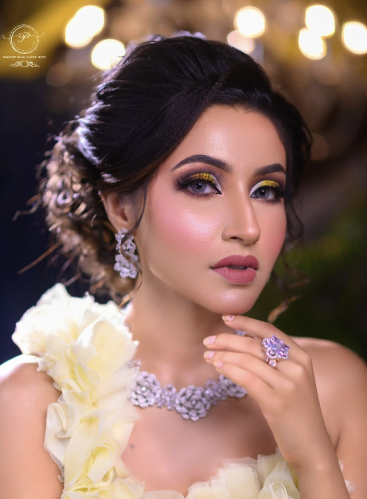

Airbrush Makeup
Airbrush makeup is a high-tech method of applying makeup where a thin, liquid foundation is sprayed through an airbrush gun. It creates a seamless, thin layer of pigment that sits on top of the skin, providing a perfectly even and "poreless" finish that is highly durable.
Go Back Home
